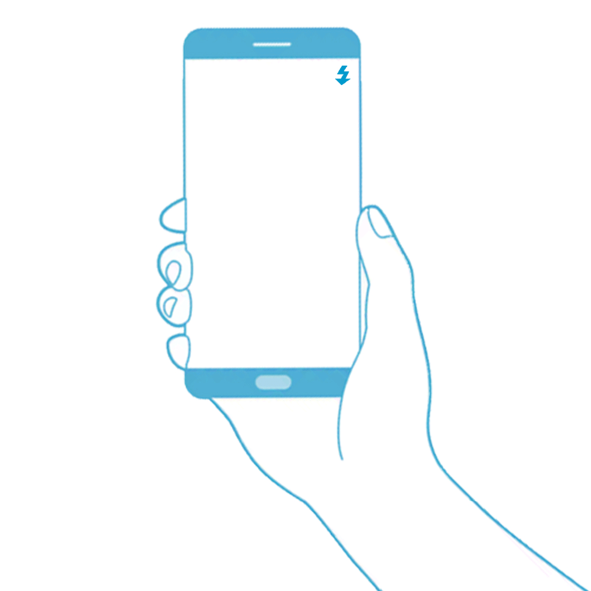

|
Fotolicht
Für den Scan eines QR-Codes ist ein hoher schwarz-weiß-Kontrast hilfreich. Sollten die Lichtverhältnisse schwierig sein, können Sie über das Blitzsymbol in der Scanansicht das Fotolicht des Smartphones ein- und ausschalten.  |
|
Entfernung variieren
Sollten Sie einmal Schwierigkeiten beim Scannen eines Codes geben, kann es helfen, den Abstand der Smartphone-Kamera zum Code zu verringern oder zu vergrößern. Dabei müssen Sie stets darauf achten, dass sich der Code vollständig im Scanbereich des Bildschirms befindet. |